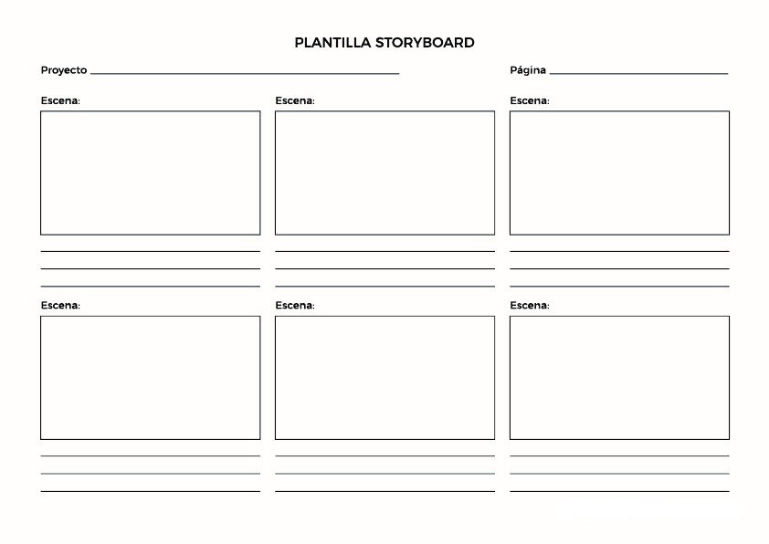

1.- IDEAS Y OBJETIVOS
- Es una forma motivadora de que los alumnos presenten las evidencias que han recogido sobre el funcionamiento de los diferentes aparatos y sistemas que forman el cuerpo humano.
- Promueve la creatividad, la creación de historias, asumiendo el rol de médicos especialistas en anatomía y fisiología de cada aparato.
- Los convierte en parte activa de su aprendizaje, será necesario revisar los contenidos estudiados: anatomía de cada aparato o sistema y el funcionamiento en el conjunto del cuerpo humano.
2.- PREPRODUCCIÓN
- Se formarán grupos de trabajo de 2 personas cada uno.
- Se repartirán los diferentes sistemas y aparatos del cuerpo humano a los grupos formados.
- Buscaremos con los alumnos las imágenes para elaborar el vídeo de fondo, el decorado, en este caso seleccionamos imágenes y videos relacionados con la anatomía de los diferentes aparatos y su funcionamiento.
- Se redactará el guión narrativo, para cada uno de los videos que se grabarán.
- Cada grupo elaborará un storyboard (guión técnico) previo.
2.1. Guión narrativo
- Descripción de los escenarios (imágenes y videos) donde cada pareja de alumnos grabará su video.
- Se describe el perfil de los personajes, vestuario y accesorios que se necesitarán para rodar las escenas.
- Se establecen los diálogos de forma concreta, que contará cada uno de los alumnos que forman el grupo, según la imagen o video que aparezca en cada plano.
- Se estructura el video de forma cronológica.
2.2. Guión técnico
- Descripción de las secuencias de escenas, donde se detallan escenario, planos, punto de vista, encuadre, duración y audio que acompaña.
- Se especifica también la posición y el desplazamiento de los alumnos por los diferentes planos.
- Diseño del storyboard: boceto en dibujo de los planos y las escenas más relevantes del audiovisual para poder tener una referencia de la historia. Es una guía clara de cómo será nuestro video en cuanto a secuencialidad, tiempo y encuadre.
Plantilla de storyboard
